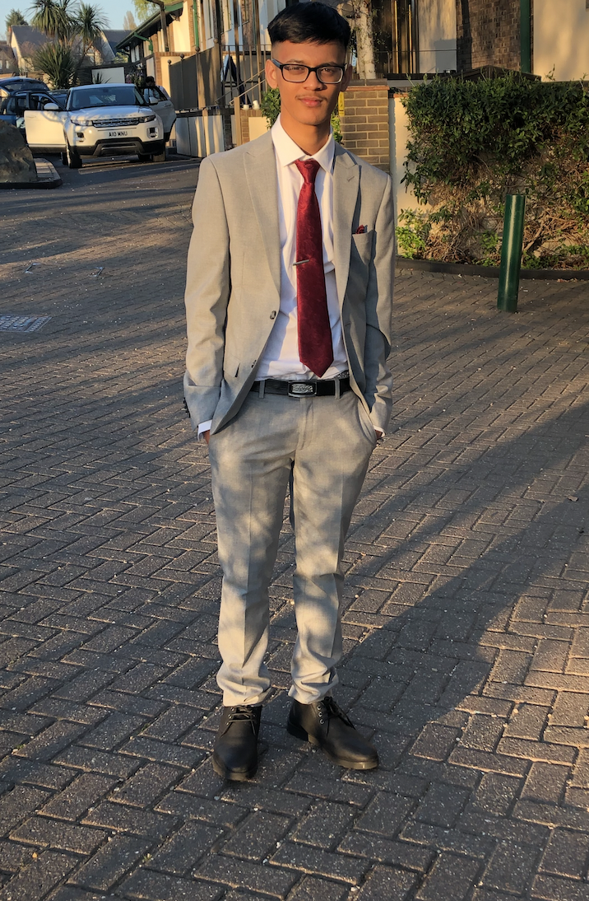
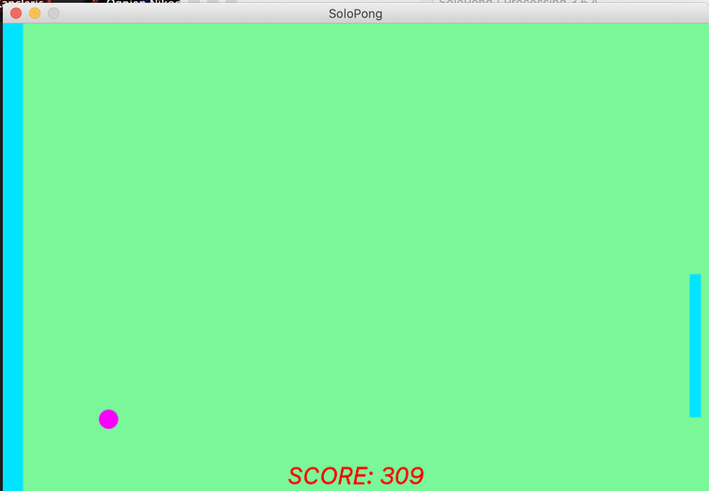
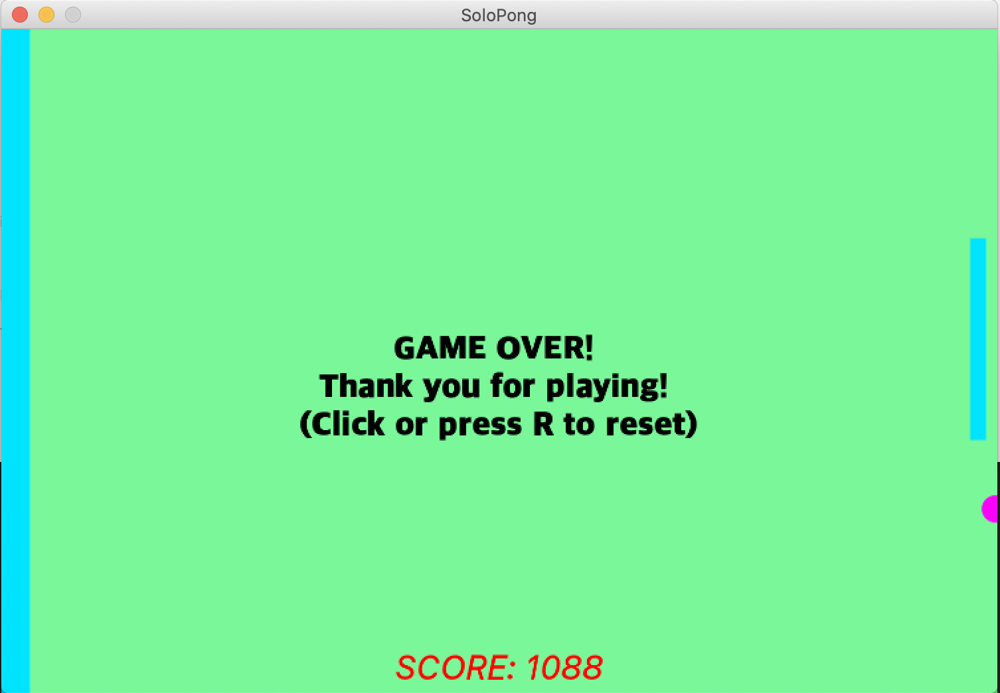
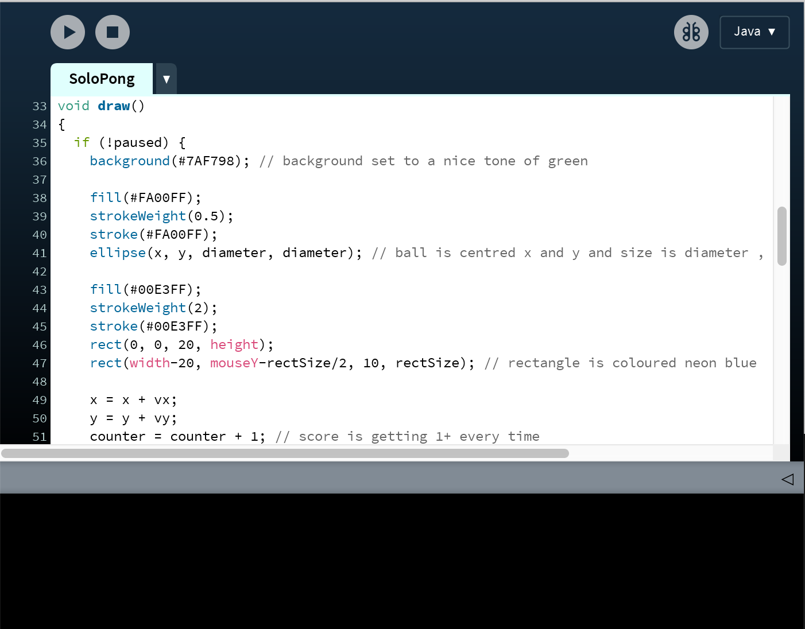

Muhammad Rafee RahmanI am an ambitious, energetic and patient individual who has developed a mature and responsible approach to any task that I undertake, or any situation I am presented with. Alongside my Computer Science degree, in my free time I love to play video games, sports and watch movies/shows. In addition to this, travelling is also one of my many passions as I really enjoy exploring new places. Programming is very new to me and this is the first time I have ever coded before so I can't wait to see all the new programs/projects I create at my time in City, University of London. |
 | |
Java Game Project 2021: "Car Crasher"In the second term of my first year at City, University of London, I was required to make a game for one of my courseworks. This game is the final product of my coursework which consists of using 'WASD' on the keyboard to move left right up and down in order to avoid objects falling from the sky. Also, in order to move on to the next level you need to collect coins and there are bonuses to collect in the shape of a dollar sign. Touching the bombs/toxic makes you lose a life however, you can easily get a life back by collecting a heart. Furthermore, in level 1 you won't be able to shoot however in level 2 and 3 you can shoot the bombs and toxic to avoid getting hit and losing a life. |
||
Bootcamp 2020: Solo PongMy first programming project, concluding the 2 week Programming Bootcamp at City (2020). This Processing project demonstrates a comprehensive understanding of the use of randomness, variables, booleans and IF statements. I created a pong game, however it is a solo version rather than the multiplayer version. As the ball moves the speed also increases by a certain value so the game gets increasingly harder. Also, I used commands such as import to add music to my project so whenever the ball bounces against the side or the moving rectangle it makes a sound. In addition to importing sound, I changed the font of my text so when the 'GAMEOVER!' message displays it's more bold and enlarged. Overall, this was a very fun and exciting 2 week bootcamp and I am pleased with what I have learnt so far and I look forward to many future projects and programs I will create. Check out the code on Github: https://github.com/RafeeRahman25/adbs878 | ||
|    | ||